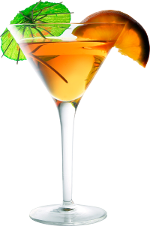
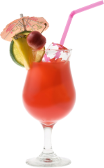
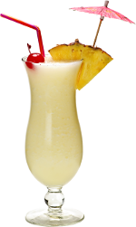
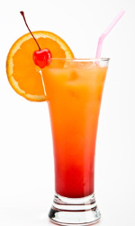

 вкусный напиток сделанный из молока и земляники
 очень ободряющий ведь в его состав входит такие вкусы как мята и вишня
 Это для тех кто людит по кислее ведь лимон он для избранных
 Единтсвенный алкогольный напиток в этом списке, но поверте каличество рома которое в нем есть врятли сможет серьзно вас опьянить, зато вкус который он придаст этому напитку вы оценитие неприменно.